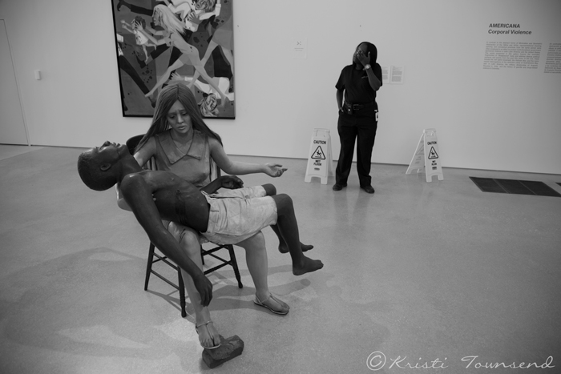
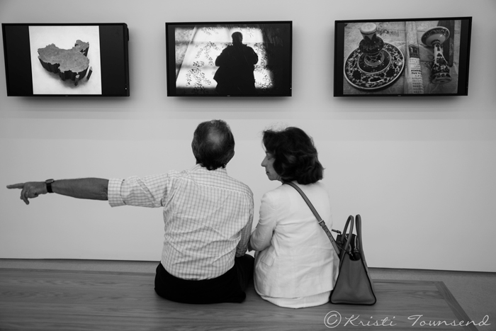
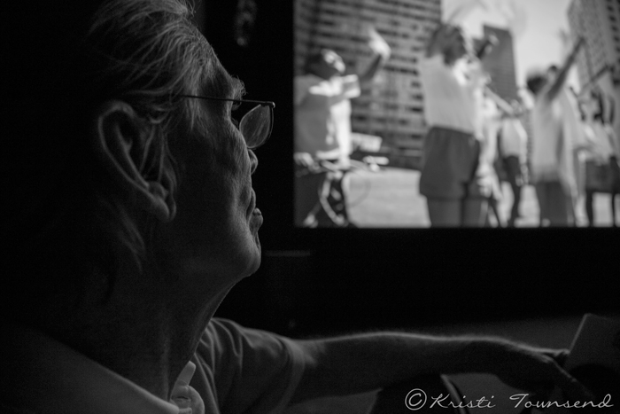
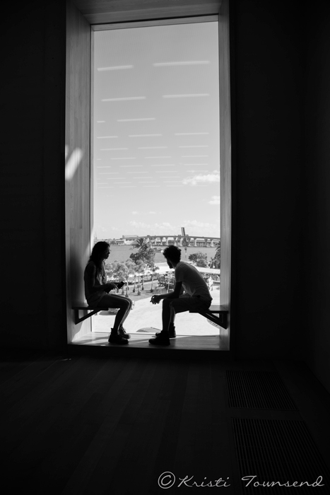

People and Art
Art surrounds us in all aspects of our society and people interact with art on a daily basis. With this project, Kristi wants to examine the relationship people have with art. These photos were taken at the Perez Art Museum Miami on it's opening weekend in December 2013.

In an exhibit on corporal violence, Kristi wanted to showcase the drastic difference between the security guard and the heart wrenching sculpture of the man and woman. This sculpture shows the distinct problems in our society and cautions viewers to be aware, signaled by the caution signs placed behind.

While sitting and watching a slideshow portion of Ai Weiwei's "According to What" exhibition, this couple appeared to be getting in a deep discussion about the content of the exhibit. Kristi saw this picture as a representation of the individual people in society's interaction with the government.

Videos surround us and are played on a daily basis in the digital modern age. Many do not appreciate the beauty and art involved in films.

The Perez museum has beautiful window seats, most of which look out over the water. This young couple sat and took a moment to enjoy the view.